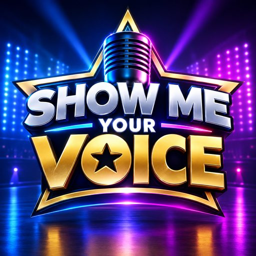

Das Castingshow-Spiel von RicoReWi
Tippen, Enter oder Ⓐ am Controller
⌨️ Pfeiltasten + Enter · 🎮 Steuerkreuz + Ⓐ, Ⓑ zurück
Alle Folgen der echten SHOW ME YOUR VOICE auf YouTube – nach Staffeln sortiert. Mehr auf smyv.ricorewi.de.
Noten fallen in vier Spuren. Drücke im Moment, in dem sie den Kreis unten berühren: Perfect (±50 ms), Gut (±100 ms), OK (±150 ms). Treffer in Folge bauen deine Combo auf.
Mitten im Song erscheint ein Publikums-Signal (👏 🙌 💃 🎤) mit einer Spur. Drücke diese Spur rechtzeitig – das bringt Bühnenpräsenz, Applaus und Votes.
Halte den Mikro-Punkt auf der blauen Melodielinie: ↑/↓ (oder W/S, J/F) halten, auf dem Bildschirm ziehen oder Steuerkreuz. Optional mit Mikrofon (Einstellungen) – das Spiel erkennt nur deine Tonhöhe, nichts wird aufgenommen.
Sing einen Song deiner Wahl wie im echten Casting – a cappella, zu einem Karaoke-Video mit Lyrics oder zu einem eigenen YouTube-Link. Das Spiel misst Intonation (relativ zu deiner Tonart), Stabilität, Stimmumfang, Dynamik und wie viel du singst; danach entscheidet die Jury. Jedes Genre hat eine Challenge mit bis zu drei Sternen. Deine Aufnahme kannst du dir danach anhören – sie bleibt auf deinem Gerät.
In der Karriere: Vor jedem Auftritt wählst du „🎮 Spiel (wie bisher)“ oder „🎙️ Echt vorsingen“. Beim echten Vorsingen bewertet die Jury deine Stimme aus dem Mikrofon statt der getroffenen Noten – Votes, Zugabe und Rangliste laufen wie gewohnt.
Vor jedem Auftritt: Wartebereich mit Startnummer und Gespräch mit der Jury (Casting) oder Interview mit Rico. Gute Antworten bringen Sympathie oder Votes. Im Casting kann die Jury bei schwacher Leistung abbrechen; bei genau einem Ja gibt es eine Zugabe a cappella. Ab dem Recall entscheidet die Gesamtwertung aus Performance, Jury und Community-Voting, und im Backstage passieren Ereignisse, auf die du reagieren musst.
Eine Person eröffnet die Show und bekommt einen 4-stelligen Code, Link und QR-Code. Bis zu 8 Personen treten bei – von überall, auch übers Internet. Alle singen gleichzeitig auf dem eigenen Gerät zur gleichen Musik, die Jury bewertet, danach stimmt ihr gegenseitig ab. Casting → Recall → Live-Shows → Finale. Wer ausscheidet, bleibt als Publikum dabei und stimmt weiter mit ab.
SHOW ME YOUR VOICE ist ein Castingshow-Format von RicoReWi – live auf TikTok, im Archiv auf YouTube.
Logo, Jury-Bilder, Hintergründe und Abzeichen: Original-Grafiken von SHOW ME YOUR VOICE.
Rico erscheint als fiktionale Spielfigur (Showmaster). Alle KI-Kandidaten, Songs und Dialoge sind frei erfunden.
📻 Radio (Standard): Live-Programm der Sender der RicoReWi-Familie auf laut.fm (u. a. RicoReWi, ChartRadio 24, RockRadio 24, ChristmasRadio 24). Das Spiel spielt den Stream nur ab und erzeugt daraus Noten (erlaubt der Stream keine Analyse, folgen die Noten dem Takt des gewählten Stils); nichts wird gespeichert oder weitergegeben. Sender, Interpret und Titel stehen während des Auftritts oben und im Ergebnis. Alle Rechte an der Musik liegen bei den jeweiligen Urhebern und Rechteinhabern.
🎹 Eigene Beats: Musik und Effekte werden live im Browser erzeugt – keine Lizenzsongs. Sie laufen auch ohne Internet.
🎙️ Karaoke-Videos: Beim Freien Vorsingen werden Karaoke-Videos von YouTube eingebettet (youtube-nocookie.com). Kanal und Song stehen beim Auftritt dabei, alle Rechte liegen bei den jeweiligen Urhebern.
📺 Show-Archiv: Die Folgen werden direkt von YouTube eingebettet (youtube-nocookie.com), die Rechte liegen bei RicoReWi.